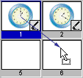
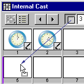

Using Director > Cast members and Cast windows > Moving cast members within the Cast window
Using Director > Cast members and Cast windows > Moving cast members within the Cast window |
Moving cast members within the Cast window
To move a cast member to a new position within the Cast window, you can use Thumbnail view to see the representation of the cast member's position.
Note: When you move a cast member to a new position, Director assigns it a new number and updates all references to the cast member in the Score, but it doesn't automatically update references to cast member numbers in Lingo scripts. The best practice, therefore, is to always name cast members and refer to them by name in Lingo scripts.
To move a cast member to a new position or a different cast:
Using Thumbnail view, drag the cast member to a new position in any open Cast window.
 |
In Thumbnail view, a highlight bar indicates where the cast member will be placed. If you drag the cast member over a position that already contains a cast member, Director places your selected cast member in that position and moves the existing cast member one position to the right.
In List view, the cast member is added to the bottom of the list.
To cut, copy, and paste cast members to a new position or a different cast:
1 |
Select one or more cast members, then choose Cut or Copy from the Edit menu. |
2 |
Do one of the following: |
In Thumbnail view, select an empty position in any open Cast window, and then choose Edit > Paste. |
|
In List view, deselect all cast members by clicking anywhere in the window except on a cast member name. Then choose Edit > Paste. |
|
Note: In either Thumbnail or List view, if you paste cast members while other cast members are selected, you will overwrite the selected cast members.
To move a cast member to a position not currently visible in Thumbnail view:
1 |
Select the cast member you want to move. |
2 |
Scroll the Cast window to display the destination position. |
3 |
Drag from the Drag Cast Member button to the destination position.
 |